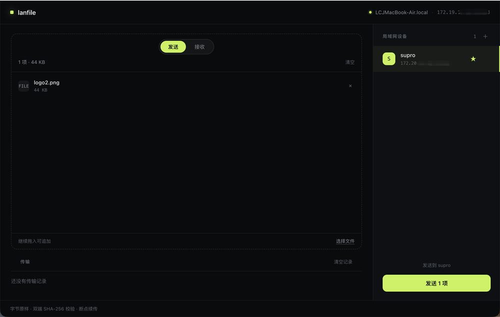
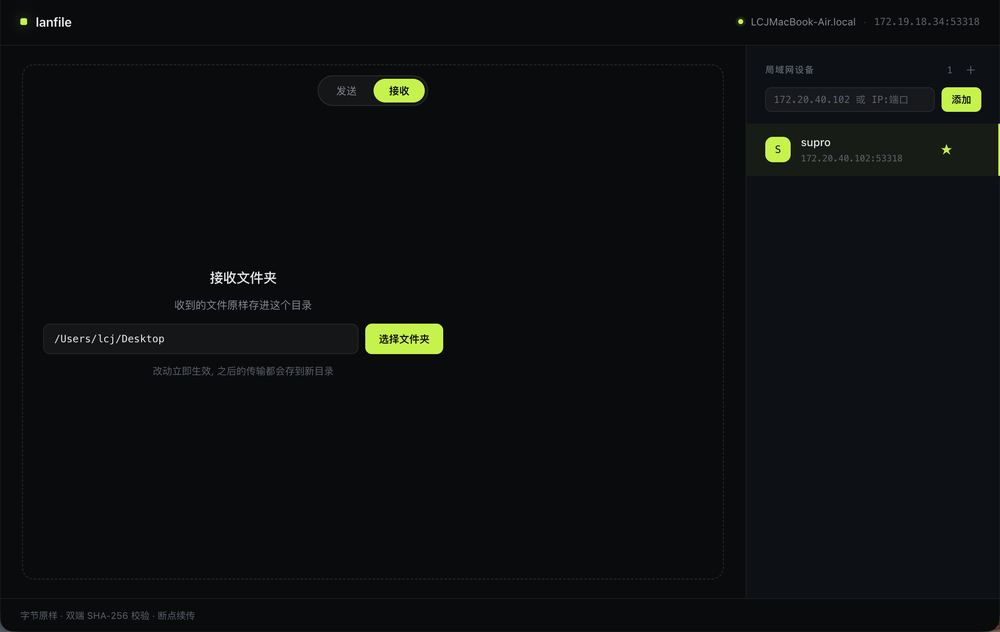

点击任意处或按 Esc 关闭
lanfile 是一个跑在局域网里的文件互传工具：一台开接收，另一台把文件扔进来。不压缩、不改名、不覆盖已有文件；传完两端各算一次 SHA-256，对得上才算完。


数据不经过任何服务器，两台机器直连。断了网就没有这条路，也就没有中途的第三方。
不压缩、不改名；目标目录已有同名文件时，它会存成「文件名 (1)」，原文件一个字节都不动。
发送前后各算一次 SHA-256，两端一致才报完成。页面上每一个安装包的指纹，也是这么算出来的。
下载对应平台的包，macOS 拖进「应用程序」，Windows 解压后直接运行。
一台切到「接收」，指定落地目录；另一台留在「发送」。命令行也行：lanfile receive / lanfile send。
把文件或整个文件夹拖到发送端，选那台设备。传完看一行「校验通过」就结束了。
如果设备列表是空的：多半是两个网络互不相通（例如连了不同频段，或路由器开了 AP 隔离）。这时直接手填对方的 IP 和端口即可。
下面三个安装包的 SHA-256 是对文件实算出来的。下载完你自己也能算一遍，对得上再装。
传输带 ID，中断之后重连会从断点继续，而不是从零重来。开了 -keepalive 也会维持连接。
7d2732c96120c5b93a8fcc52bf8e4b131eadf37b5d47f99425f5da1163b37dc58e54b526dd55f28c706454c9a717cc84f6f55e71ff7713a8b1efe24338271fb4047ccc678c12abdd16b6854b5f07feaedc455530433fa2ea9b866c1d278c2d64macOS 首次打开如果提示「无法验证开发者」：在「系统设置 → 隐私与安全性」里点「仍要打开」。核对指纹可以在终端跑 shasum -a 256 文件名，Windows 用 certutil -hashfile 文件名 SHA256。
不会。传过去的就是原文件，字节级一致，名字也保持不变。目标目录里已经有同名文件时，会存成「文件名 (1)」，不覆盖。
都不需要。两台机器在同一个局域网里就能直连，数据不经过服务器。
常见原因是两个设备不在同一网段，或路由器开了 AP 隔离。此时手填对方的 IP 和端口即可直连。
不用。每次传输都有 ID，重连之后会从断点继续；加 -keepalive 可以维持长连接。